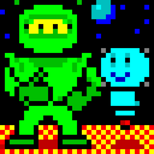

IN SEARCH OF SPOT
Preparing your mission…
On your iPhone or iPad, open Safari’s Share menu and choose Add to Home Screen. Open the added app once online to finish its download.
Your progress stays on this device.
Math Blaster is played in landscape.
Turn your iPhone or iPad sideways to continue.